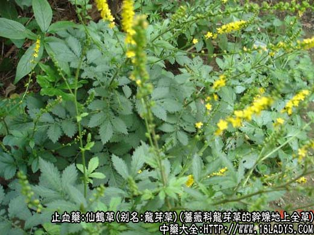
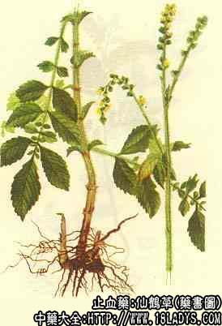

原文连接:https://www.daquan.com/post/2281.html
本品为常用中药。始载《图经本草》，原名龙芽草。它具有止血、强心、抗菌、驱虫的功效，仙鹤草晒干后的样子许多人不知道，下面中药师宁宁为大家分享干仙鹤草图片以及功效和作用。

仙鹤草图片 种植

干仙鹤草图片
来源：为蔷薇科植物龙芽草的干燥地上全草，野生。
植物形态：多年生草本，茎直立，上部多分枝，高30～90厘米，全体密生长柔毛。叶互生，单数参差羽状复叶，小叶，无柄，椭圆状卵形或倒卵形，长3～6.5厘米，宽1～3厘米，边缘有锯齿，托叶近卵形。总状花序顶生，苞片细小，常3裂；花黄色，直径6～9厘米；萼筒外面有槽并有毛，顶端生一圈钩状刺毛，裂片5；雄蕊10；心片20。瘦果倒圆锥形。
产地：主产于江苏、浙江、湖北等地，全国其它各地亦有生产。

性状鉴别：茎棕褐色，直径4～6毫米，基部木质化，节明显，茎上部节面长，下部茎上有时残存托叶，上部茎淡黄棕色，抽沟内陷，被有白色柔毛。质稍坚韧，易折断，断面中空。叶灰绿色或棕褐色，皱缩卷曲。偶可见花及果。气微，味淡，微涩。
以茎棕褐色，枝嫩，叶完整者为佳。
主要成分：含仙鹤草（为酚性松脂酸）、仙鹤草甲素、仙鹤草乙素、仙鹤草丙素。另含鞣质、维生素K1等。
仙鹤草的功效与作用
1、止血。促进血液凝固。
2、强心。调整心率，大量服用能使心搏徐缓。
3、抗菌。体外试验能抑制革兰氏阳性菌。
4、驱虫。其根芽有驱绦虫作用《新医药学杂志》。
炮制：切咀，生用。
归经：入心、肝、脾经。
功能：收敛止血，补虚。
主治：吐、咯、衄、便、尿血、崩漏等各种出血证，治脱力劳伤。
临床应用：广泛用于治疗身体各部位出血，无论鼻衄、吐血、便血或子宫出血，都可应用。十多年前已制成注射剂及片剂供用，但止血效果各方面的评价不一致，一般来说其力较缓弱。单用虽也有一定效果，但往往要配其他止血药同用。例如治吐血时，可配侧柏叶、白芨、藕节等，方如鹤柏汤。
此外，也有用于止泻和驱绦虫[中草药通讯,(1):34,1972]。
本品生用较多，但有时也炒炭用。
用量：15～30g，大剂可用至60g，可研末服，或入煎剂。亦可用仙鹤草煎汤，送服其它止血药散。
处方举例：鹤柏汤：仙鹤草30g、侧柏叶12g、白芨15g、藕节30g、大小蓟12g，水煎服。
注：仙鹤草芽（秋末至翌春挖取地下幼芽）晒干后，磨粉口服，成人30～50g，用于驱除绦虫效果良好。其驱绦虫的有效成分，为仙鹤草芽素。此外，尚含有仙鹤草内脂、仙鹤草醇及8%的儿茶酚酯鞣质。
了解更多理血的中药，还为您推荐↓↓↓↓